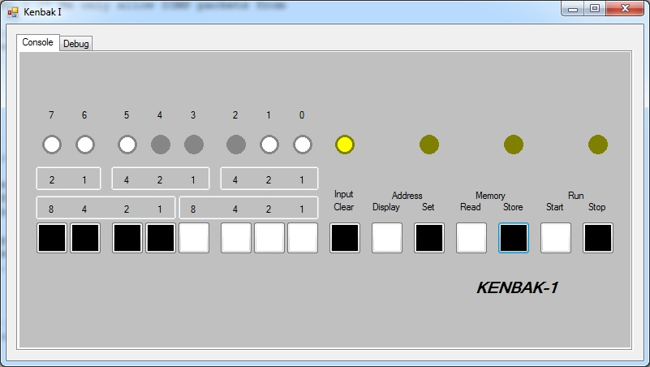
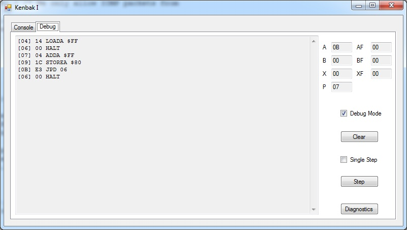

The Kenbak-1 was designed by John Blankenbaker in 1970 and first sold in early 1971. This machine is considered to be the first "Personal Computer" according to the Computer History Museum. It is interesting to note that this computer predates microprocessors (The Intel 4004 was released in 1971) and therefore it is built entirely from simple TTL ICs. This machine had 256 bytes of 8-bit memory implemented using 2 1024-bit shift registers, in essence an electronic version of the mercury delay lines used by EDSAC and other early computers. The machine supports 5 different addressing modes, including indirect and indexed, a remarkable achivement for a machine like this. About 40 of these machines were built and sold for around $750 each.
Download the Kenbak-1 simulator
Note: This program requires .net 4.0 framework to be installed

